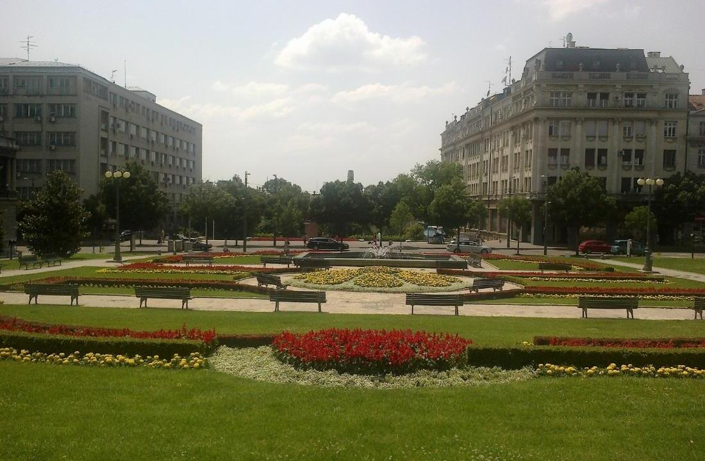
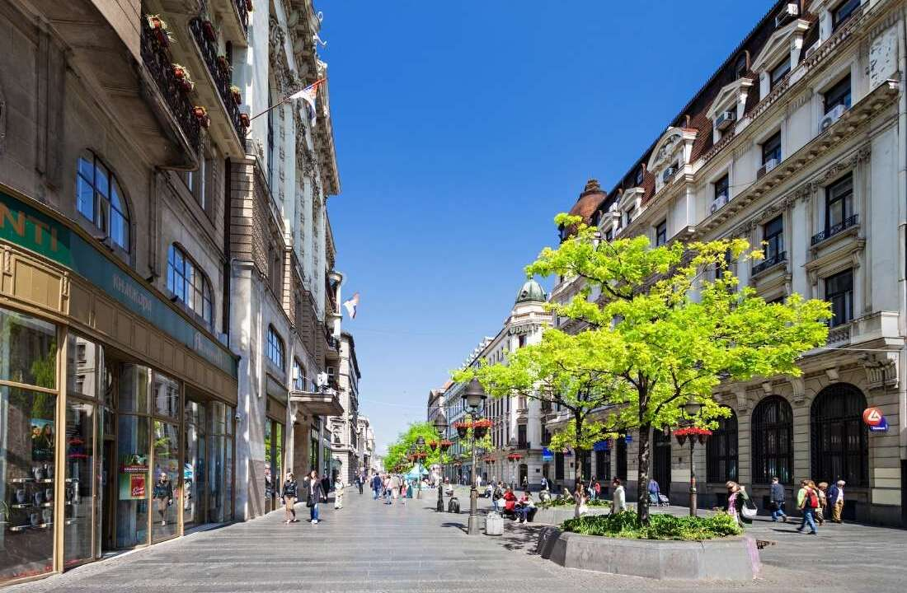
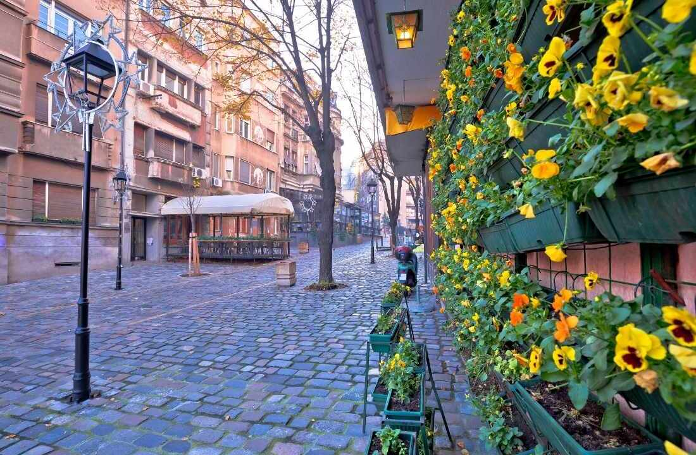

SELIDBE STARI GRAD
PROFESIONALNE I SIGURNE SELIDBE U CENTRU BEOGRADA
Selidbe Stari Grad predstavljaju specifičan izazov zbog same strukture ovog dela Beograda, koji važi za istorijsko i administrativno jezgro grada. Gust saobraćaj, ograničen pristup vozilima i veliki broj pešačkih zona zahtevaju pažljivo planiranje i iskustvo u organizaciji selidbi. Upravo zato je važno da odaberete agenciju koja razume lokalne uslove i može da prilagodi logistiku svakoj situaciji.
Atlas selidbe Beograd već godinama uspešno realizuje selidbe u opštini Stari Grad, pružajući klijentima sigurnu, brzu i efikasnu uslugu. Bilo da se selite iz manjeg stana, luksuznog apartmana ili poslovnog prostora, naš tim pristupa svakom projektu sa jednakom pažnjom i profesionalnošću. Fokus nam je na očuvanju vaših stvari, poštovanju rokova i maksimalnom smanjenju stresa koji preseljenje može izazvati.

Pored standardnih usluga transporta, nudimo i kompletnu organizaciju selidbe – od pakovanja i zaštite stvari do demontaže i montaže nameštaja. Zahvaljujući iskustvu i dobro uigranom timu, selidbe u centru grada postaju jednostavan i organizovan proces.
ZAŠTO SU SELIDBE U STAROM GRADU SPECIFIČNE?
Zbog kombinacije urbanih i istorijskih karakteristika selidbe Stari Grad razlikuju se od drugih lokacija u Beogradu. Ovaj deo grada ima posebna pravila kretanja, ali i specifične uslove za transport stvari.
Pozovite Atlas selidbe
Uske ulice i ograničen pristup vozilima
Mnoge ulice na Starom Gradu projektovane su u vreme kada nije bilo modernog saobraćaja, zbog čega danas predstavljaju izazov za veća transportna vozila. Naš tim pažljivo planira pristup lokaciji i bira odgovarajuće vozilo kako bi selidba protekla bez komplikacija. U pojedinim situacijama koristimo kombinaciju vozila i ručnog transporta kako bismo obezbedili maksimalnu efikasnost.
Nedostatak parking prostora
Jedan od najvećih izazova jeste pronalaženje parking mesta u blizini objekta. Iskustvo nam omogućava da unapred procenimo najbolji termin dolaska i organizujemo selidbu u Starom gradu u vreme kada je gužva najmanja, čime značajno ubrzavamo ceo proces.
Stare zgrade i specifična arhitektura
Veliki broj zgrada u ovom delu grada nema lift ili poseduje uske hodnike i stepeništa. To zahteva dodatnu pažnju prilikom nošenja stvari, kao i korišćenje posebnih tehnika zaštite nameštaja, bele tehnike i kućnih aparata.

USLUGE KOJE NUDIMO ZA SELIDBE STARI GRAD
Agencija za selidbe Atlas pruža kompletan spektar usluga kako bi klijent dobio sve na jednom mestu i bez potrebe za dodatnom organizacijom. Naš cilj je da svako preseljenje učinimo što jednostavnijim, bezbednijim i efikasnijim. Zahvaljujući dugogodišnjem iskustvu u organizaciji selidbi Stari Grad, razvili smo sistem rada koji omogućava brzu realizaciju i maksimalnu sigurnost svih stvari tokom transporta.
Svako preseljenje se planira unapred, uzimajući u obzir specifičnosti lokacije, pristup objektu, spratnost i količinu stvari, što nam omogućava da izbegnemo nepredviđene situacije i obezbedimo efikasan tok selidbe. Naš tim čine iskusni i obučeni radnici koji znaju kako da pažljivo rukuju svim vrstama stvari – od lomljivih predmeta i prevoza bele tehnike do kabastog nameštaja.
Selidbe stanova u Starom Gradu
Organizujemo preseljenja svih tipova stambenih prostora, od garsonjera do velikih porodičnih stanova. Svaka selidba stana se planira u skladu sa količinom stvari i specifičnostima lokacije, kako bi sve bilo završeno u najkraćem mogućem roku.
Pozovite Atlas selidbe
Selidbe kancelarija i firmi
Poslovna preseljenja zahtevaju poseban pristup jer je važno da se rad firme ne prekida. Naš tim planira selidbe firmi i kancelarija na teritoriji opštine Stari Grad tako da se obavi brzo i efikasno, uz minimalan zastoj u radu.
Kombi preseljenja
U zavisnosti od potreba klijenta, koristimo različite tipove vozila. Kombi selidbe su idealne za manje količine stvari i uske ulice, dok su kamioni namenjeni većim preseljenjima i nisu praktični za selidbe Stari Grad.
Pakovanje i zaštita stvari
Kvalitetno pakovanje stvari je ključ sigurnog preseljenja. Koristimo profesionalne materijale kao što su zaštitne folije, kartonske kutije i specijalne trake, kako bi sve stvari bile maksimalno zaštićene.
Demontaža i montaža nameštaja
Naši radnici stručno demontiraju i ponovo montiraju nameštaj, što olakšava transport i sprečava eventualna oštećenja tokom selidbe Stari Grad. Posebnu pažnju posvećujemo pravilnom rastavljanju svih elemenata – od ormara, kreveta i kuhinjskih elemenata, do kancelarijskog nameštaja i polica – kako bi svaki deo bio bezbedno pripremljen za transport. Sav materijal se pažljivo obeležava i pakuje, što omogućava brzu i preciznu ponovnu montažu nameštaja na novoj lokaciji.

CENA SELIDBE STARI GRAD – ŠTA UTIČE NA TROŠKOVE?
Cena selidbe Stari Grad zavisi od više faktora, a naš cilj je da klijent uvek dobije jasnu i transparentnu ponudu bez skrivenih troškova. Prilikom formiranja cene uzimamo u obzir količinu i vrstu stvari, spratnost objekta, postojanje lifta, pristup lokaciji, kao i udaljenost između adresa. Takođe, dodatne usluge poput pakovanja, demontaže i montaže nameštaja ili angažovanja većeg broja radnika mogu uticati na konačnu cenu, ali ujedno značajno olakšavaju ceo proces preseljenja. Svakom klijentu pristupamo individualno, analiziramo konkretne potrebe i predlažemo optimalno rešenje kako bi odnos cene i kvaliteta usluge bio maksimalno isplativ.
Bitne informacije za cene selidbi:
- Veća količina stvari zahteva više vremena i veći transportni kapacitet.
- Selidbe bez lifta ili na višim spratovima zahtevaju dodatni rad i utiču na cenu.
- Cena zavisi od toga da li se selidba vrši unutar opštine ili na drugu lokaciju.
- Pakovanje, montaža i specijalni transport mogu povećati ukupnu cenu, ali značajno olakšavaju proces.
PRESELJENJE STARI GRAD PO KVARTOVIMA I LOKACIJAMA
Naše usluge selidbe dostupne su u svim delovima opštine Stari Grad, uključujući:
- Dorćol
- Kalemegdan
- Studentski trg
- Obilićev venac
- Kosančićev venac
- Knez Mihailova
- Terazije
- Trg republike
- Zeleni venac
- Cara Dušana
- Gundulićev venac
- Skadarlija
Poznavanje svih ovih lokacija omogućava nam da brzo reagujemo i prilagodimo organizaciju selidbe Stari Grad konkretnim uslovima na terenu.
Pozovite Atlas selidbe
KAKO IZGLEDA PROCES SELIDBE U STAROM GRADU?
Organizovan proces preseljenja omogućava sigurnost, brzinu i efikasnost. Naš pristup je jasan i provereno funkcionalan.
Procena i planiranje
Na osnovu informacija koje dobijemo od klijenta i izlaska na teren procenjujemo obim posla i pravimo detaljan plan. Uzimamo u obzir sve faktore – pristup lokaciji, spratnost, količinu stvari i posebne zahteve.
Pakovanje i priprema
Svaka stvar se pažljivo pakuje i obeležava kako bi se olakšao kasniji raspored. Posebna pažnja posvećuje se lomljivim predmetima i tehnici.
Transport i logistika
Transport nameštaja i drugih predmeta se organizuje tako da se izbegnu gužve i nepotrebna zadržavanja, uz pažljivo planiranje svakog detalja unapred. Naš tim bira optimalne rute i vreme kretanja u skladu sa saobraćajnim uslovima, zonama ograničenog pristupa i specifičnostima selidbe Stari Grad, kako bi sve proteklo brzo i efikasno. Uspešno koordiniramo dolazak vozila, utovar i istovar, čime smanjujemo vreme trajanja preseljenja i izbegavamo nepredviđene situacije.
Istovar i raspored stvari
Po dolasku na novu lokaciju, stvari se unose i raspoređuju prema dogovoru sa klijentom, čime se proces preseljenja završava brzo i efikasno. Upravo zbog toga, selidbe Stari Grad uz Atlas postaju organizovan i pouzdan proces, bez nepotrebnih komplikacija za klijenta.
PREDNOSTI ANGAŽOVANJA NAŠE AGENCIJE ZA PRESELJENJA
Angažovanje profesionalne agencije za preseljenja Atlas donosi sigurnost i uštedu vremena, što je posebno važno kod selidbi selidbi Stari Grad, jer veoma dobro poznajemo sve specifičnosti ove opštine.
Koristimo proverene metode zaštite kako bi vaše stvari bile potpuno bezbedne tokom transporta. Preseljenja organizujemo tako da se završe u najkraćem roku, bez nepotrebnog zadržavanja.
Svaki klijent i svako preseljenje su različiti, zbog čega pristupamo svakom projektu posebno. Naš cilj je da vam omogućimo da se fokusirate na novi početak, dok mi brinemo o svim tehničkim detaljima.
Naša firma za selidbe u Starom Gradu i drugim delovima Beograda preuzima kompletnu organizaciju, od prvog kontakta do završetka procesa. Naš tim je tu da odgovori na sva pitanja, pruži savete i obezbedi da sve protekne bez problema. Ako su vam potrebne pouzdane i profesionalne selidbe, Atlas je pravi izbor. Kombinacija iskustva, organizacije i kvalitetne usluge garantuje uspešno preseljenje bez stresa. Kontaktirajte nas i obezbedite sigurno, brzo i efikasno preseljenje.